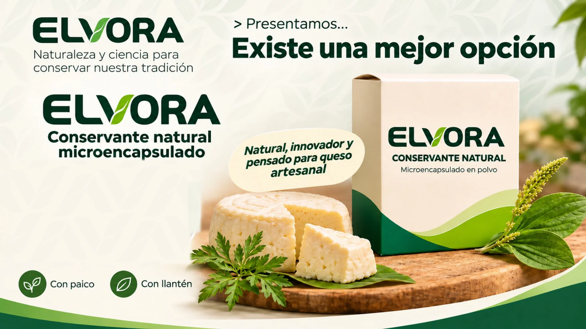
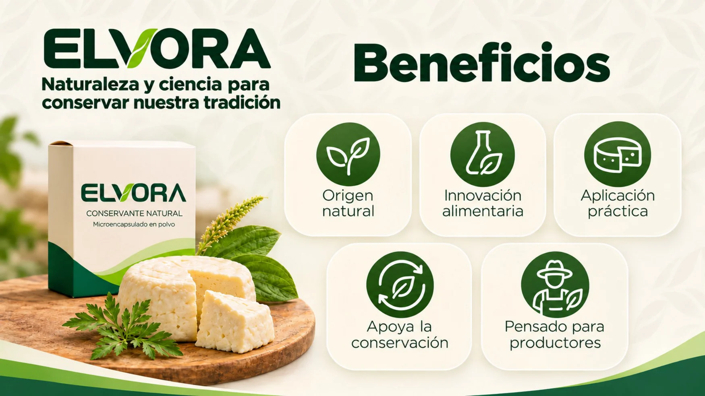
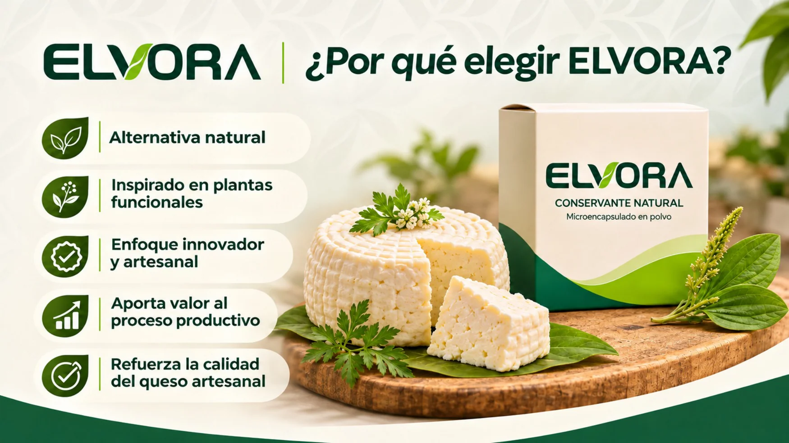

ELVORA.
Naturaleza y ciencia como punto de partida de una propuesta de marca.

La idea detrás
del proyecto.
Propuesta visual de un conservante natural microencapsulado pensado para el queso amasado artesanal. La identidad une formas orgánicas, verdes y materiales de comunicación que explican el concepto y presentan su posible aplicación. Es una propuesta académica en desarrollo, no un producto comercial validado.
Proyecto interdisciplinario colaborativo de Multimedia e Ingeniería en Alimentos, UPEC.
← Regresar a proyectos- Categoría
- Branding y campaña
- Año
- 2026
- Herramientas / recursos
- Illustrator · Photoshop · Presentaciones
- Participación
- Participación en el desarrollo visual y la comunicación del proyecto.
VISTAS DEL PROYECTO
Más de cerca.


